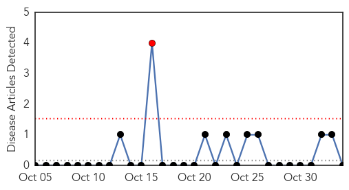
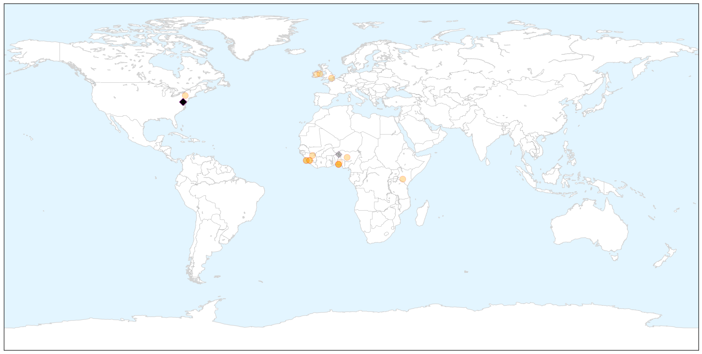
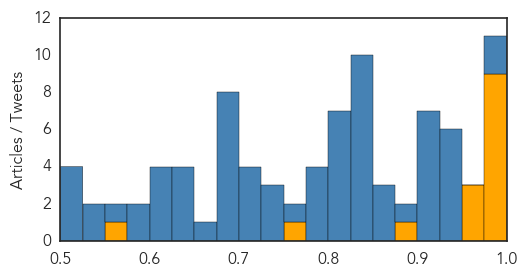

Yellow Fever
30-Day Web Trend
1 alerts, 0 warnings

30-Day Twitter Trend
0 alerts, 0 warnings

Article Locations


Article Confidences

Top Articles:
-
No articles found for Nov 03, 2015
Top Tweets:
-
No tweets found for Nov 03, 2015
Ebola
30-Day Web Trend
4 alerts, 0 warnings

30-Day Twitter Trend
19 alerts, 1 warnings

Article Locations

X

Article Confidences
Top Articles:
- 1.000
- Médecins Sans Frontières (MSF) International
- 0.999
- Sierra Leone set for Ebola all clear as it approaches 42 days without a fresh case
- 0.999
- Ebola countries contributing Mp3 indir video ve müzik yükle
- 0.998
- Ebola scare stigmatised African immigrants in the US
- 0.997
- How the Ebola scare stigmatized African immigrants in the US
- 0.997
- Baby joy for Nigerian Ebola survivor
- 0.980
- State should pay to replace health workers it recruits – Robinson
- 0.980
- Baby joy for Nigerian Ebola survivor
- 0.977
- State should pay to replace health workers it recruits – Robinson
- 0.968
- Building on Sierra Leone’s Health Sector-Engaging China
- 0.964
- How Sierra Leone Fought Ebola With TB Joshua’s ‘Anointing Water’
- 0.961
- Sierra Leone officials say flawed aid strategies hamper Ebola recovery efforts
- 0.897
- Ebola baby is born to healthy parents
- 0.755
- Maada Bio concludes second phase of social mobilisation
- 0.550
- 20 Facts About Nigeria’s Health Sector
Top Tweets:
- 0.977
- Emergency Appeal Operation Update - Ebola Virus Disease Emergency Appeals (Guinea Liberia ... - https://t.co/yj14mbnAYj ebola
- 0.976
- News Outlets Examine Ebola's Impact In West Africa; Sierra Leone Expected To Be Declared Ebola ... - https://t.co/FXnDYJivbe ebola
- 0.946
- TB Joshua's 'anointing water' reportedly curing Ebola in Sierra Leone - DailyPost Nigeria https://t.co/FNy1GTh4me ebola EVD
- 0.946
- CDC report details Nigeria's effective Ebola response during 2014 epidemic - https://t.co/YDmJWrqWBP ebola
- 0.944
- Effectiveness of Ring Vaccination as Control Strategy for Ebola Virus Disease - https://t.co/S90u6dMWHQ ebola
- 0.943
- Volunteering to take on the Ebola virus - https://t.co/zwHq6snfXo ebola
- 0.943
- Ebola: ''Le virus ne peut être éradiqué en Afrique de l’ouest'' affirme Dr Thierry Baldet chercheur au CRDI https://t.co/7avoARwEQN
- 0.938
- TB Joshua's 'anointing Water' Reportedly Curing Ebola In Sierra Leone - https://t.co/E7FN8FuDhh ebola
- 0.920
- IS TB Joshua's Holy Water Truly Curing Ebola In Sierra Leone? - https://t.co/j9010KhDj0 ebola
- 0.919
- 5893 Suspected Ebola Cases Declared Negative - https://t.co/ca3ppiGAHn ebola
- 0.910
- West Africa Continues Fighting Ebola - https://t.co/pbPDCpDBzy ebola
- 0.908
- Indirect costs associated with deaths from the Ebola virus disease in West Africa https://t.co/uiTjs1casr
- 0.906
- Ebola news: Genomic analysis confirms Ebola can be sexually transmitted - https://t.co/6EFxpoVRtR ebola
- 0.905
- Early hospitalizations critical for Ebola patients - https://t.co/ASUpC2skDn ebola
- 0.903
- Sierra Leone officials say flawed aid strategies hamper Ebola recovery efforts - https://t.co/REf5wjtWav ebola
- 0.879
- CIDRAP: Analysis suggests Liberia Ebola cases higher than thought - https://t.co/wHmOIFzxsD ebola
- 0.871
- Metallic poisoning not Ebola killed UNICAL student–FG - The Punch https://t.co/3XGUFW0oxO ebola EVD
- 0.868
- sizzla ebola mp3 - https://t.co/d0sT71F9Lp ebola
- 0.868
- Ebola PSA - https://t.co/p0gzhvAAbK ebola
- 0.848
- Read: How Nigeria beat the Ebola virus in three months https://t.co/k3bH5exVFU Africaagainstebola
- 0.848
- Metallic poisoning not Ebola killed UNICAL student–FG - https://t.co/1WGf3RLyoH ebola
- 0.846
- O VÍRUS EBOLA! - PLAGUE INC - https://t.co/ITmOjKVoWM ebola
- 0.845
- Sierra Leone to be declared ebola-free by WHO - https://t.co/9j8PvNcr16 ebola
- 0.845
- Sierra Leone set for Ebola all clear as it approaches 42 days without a fresh case - https://t.co/7SGeUKCMI6 ebola
- 0.839
- WOW! Ebola Survivor Delivers Ebola-Free Baby In California (PHOTOS) - https://t.co/QDgUkxzaQ7 ebola
- 0.833
- Sierra Leone to be declared ebola-free - https://t.co/cIFPSdVkzw ebola
- 0.833
- Sierra Leone to be declared ebola-free - https://t.co/4m4IPedO5V ebola
- 0.833
- Guinea: Newborn tests positive for Ebola despite healthy parents - https://t.co/q9yH1UfRsa ebola
- 0.831
- snoey's shop of ebola - https://t.co/fxJvlpt07d ebola
- 0.820
- Whit people act racist. Ebola Starbucks slaveowners smh - https://t.co/7hHzYWBy1d ebola
- 0.820
- Liberia's President Thanks China for Help During Ebola Outbreak During her Visit in the Country - https://t.co/rfqp8l4Zek ebola
- 0.819
- Ebola crisis update - 2 November 2015 - Médecins Sans Frontières (MSF) International https://t.co/ct5dKRko7G ebola EVD
- 0.818
- 'First Vote of Confidence After Ebola' - https://t.co/irSNOgiQvk ebola
- 0.815
- West Dorset doctors help fight against Ebola - https://t.co/bMmcMaeRII ebola
- 0.810
- Ebola crisis update - 2 November 2015 - https://t.co/PuHjIupQT2 ebola
- 0.809
- Concern says Ireland took 'excessive precautions' against Ebola - Irish Times https://t.co/dgKyWB3VU0 ebola EVD
- 0.791
- Sierra Leone set for Ebola all clear as it approaches 42 days without a fresh case - The Guardian https://t.co/nYcA1THzXK ebola EVD
- 0.788
- Ebola Virus Disease Complicated by Late-Onset Encephalitis and Polyarthritis SierraLeone https://t.co/np59IVnlQE
- 0.779
- Hearing communities in health crises: lessons from Ebola - https://t.co/6E9U3n9VZN ebola
- 0.776
- Concern says Ireland took 'excessive precautions' against Ebola - https://t.co/nZEyj6sRJH ebola
- 0.760
- Ebola's Immune Escape - https://t.co/PDRHGvFMeU ebola
- 0.750
- Early hospitalization key to survival for Ebola victims - https://t.co/YmJpkKV0n6 ebola
- 0.731
- RCS Supports 12 Ebola Survivors - https://t.co/1J7ch5jVzw ebola
- 0.727
- Paul Allen's Ebola Funding Evolves With an Eye on the Next Epidemic - Inside Philanthropy https://t.co/Bj83p2XsZ6 ebola EVD
- 0.723
- Medicago to create monoclonal antibodies for Ebola - https://t.co/lMf1mCSr4g ebola
- 0.715
- LOOK BACK at EBOLA - https://t.co/Csz5qXnyRB ebola
- 0.710
- Medicago to develop two Ebola antibodies under PHAC contract - https://t.co/gUQH0IKdSO ebola
- 0.709
- Paul Allen's Ebola Funding Evolves With an Eye on the Next Epidemic - https://t.co/hokpi2sIj1 ebola
- 0.699
- Scientist receives Ebola Medal - https://t.co/3TSgmwnxsV ebola
- 0.696
- Ebola scare stigmatised African immigrants in the US - https://t.co/etZB8sivGw ebola
Showing top 50 tweets...